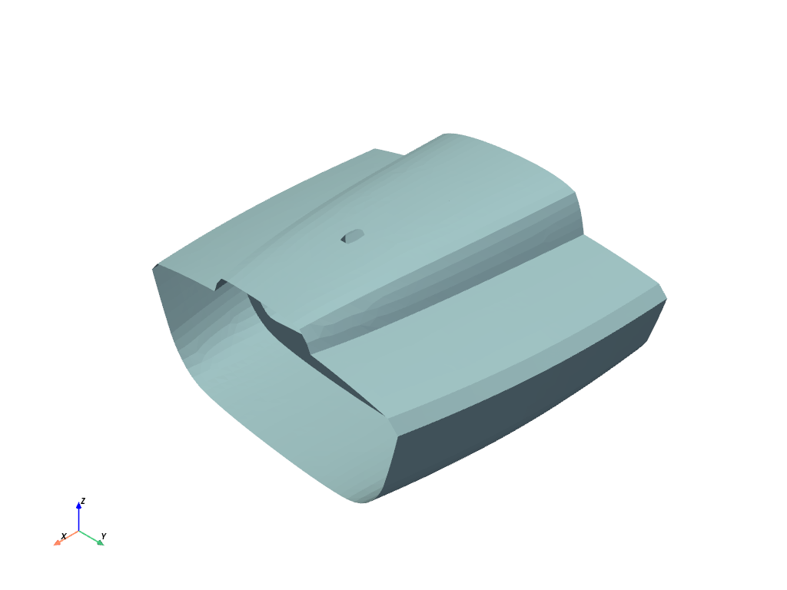
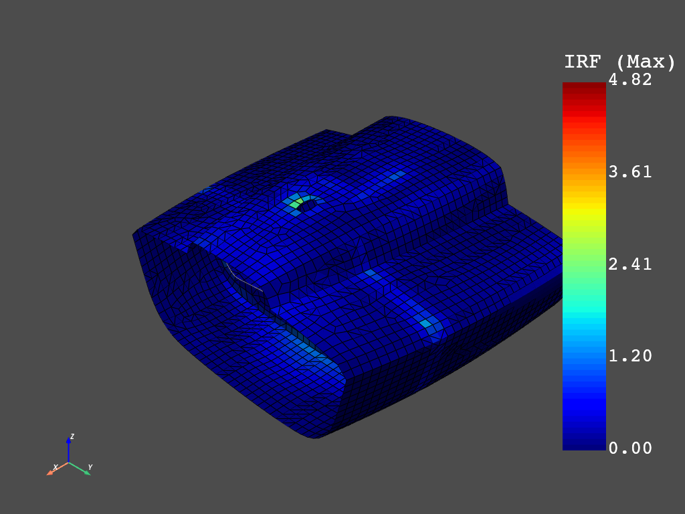
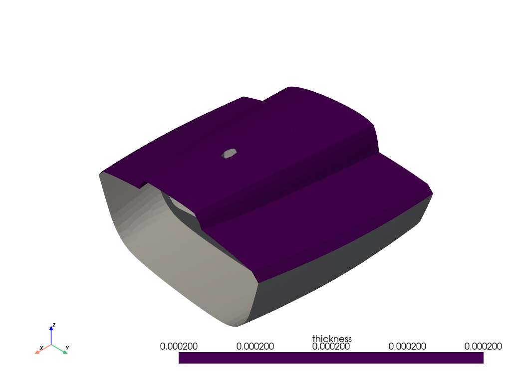
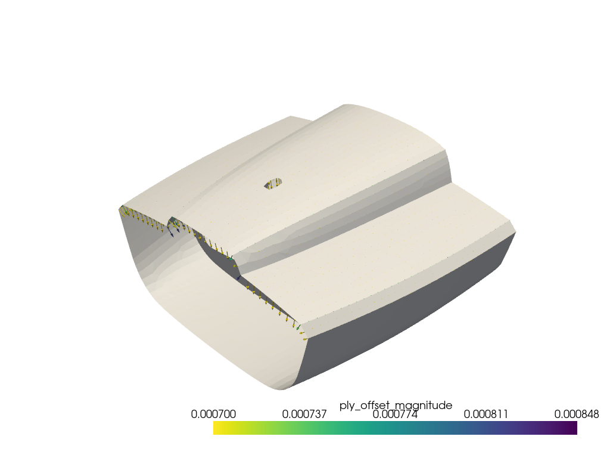
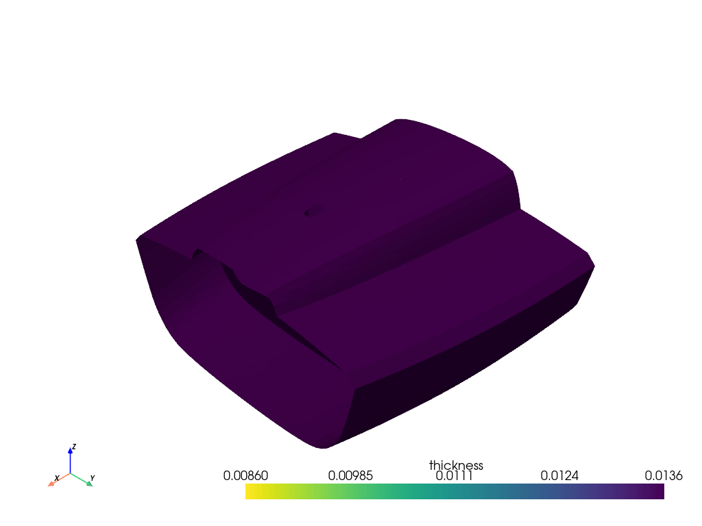
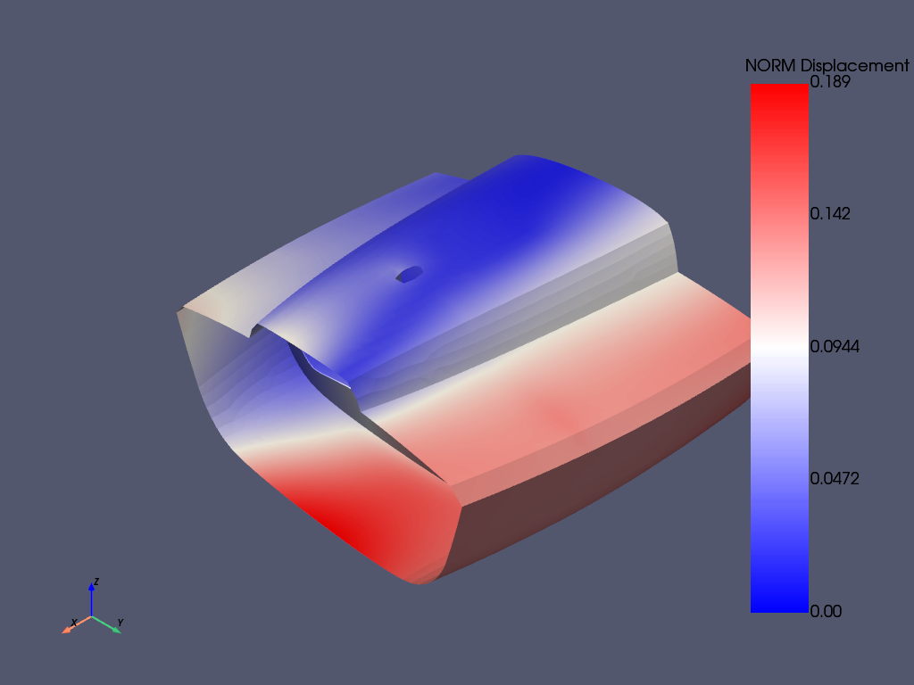
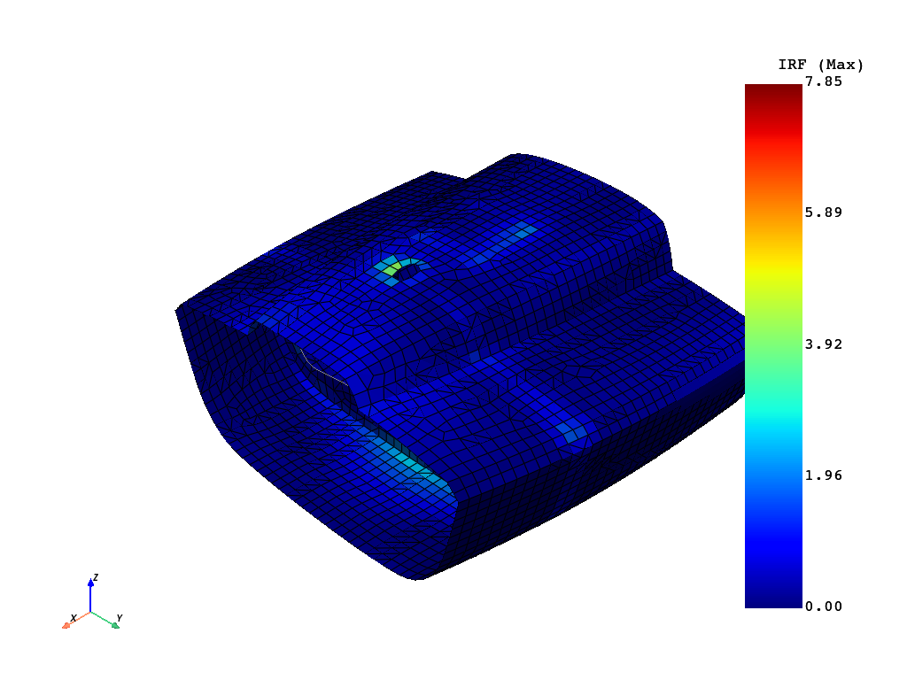

Note
Go to the end to download the full example code
Class 40 example#
Define a Composite Lay-up with PyACP, solve the resulting model with PyMAPDL, and run a failure analysis with PyDPF-Composites.
The starting point is a MAPDL CDB file which contains the mesh, material data and the boundary conditions. This model is imported in PyACP to define the lay-up. PyACP exports the resulting model for PyMAPDL. Once the results are available, the RST file is loaded in PyDPF composites. The additional input files (material.xml and ACPCompositeDefinitions.h5) can also be stored with PyACP and passed to PyDPF Composites.
The MAPDL and DPF services are run in docker containers which share a volume (working directory).
Setup: Connect to PyACP Server#
Import standard library and third-party dependencies
import os
import pathlib
import tempfile
import pyvista
Import Ansys libraries
import ansys.acp.core as pyacp
Launch the PyACP server and connect to it.
acp = pyacp.launch_acp()
Load Mesh and Materials from CDB file#
Define the directory in which the input files are stored.
try:
EXAMPLES_DIR = pathlib.Path(os.environ["REPO_ROOT"]) / "examples"
except KeyError:
EXAMPLES_DIR = pathlib.Path(__file__).parent
EXAMPLE_DATA_DIR = EXAMPLES_DIR / "data" / "class40"
Send class40.cdb to the server.
CDB_FILENAME = "class40.cdb"
local_file_path = str(EXAMPLE_DATA_DIR / CDB_FILENAME)
print(local_file_path)
cdb_file_path = acp.upload_file(local_path=local_file_path)
/home/runner/work/pyacp/pyacp/examples/data/class40/class40.cdb
Load CDB file into PyACP and set the unit system
model = acp.import_model(
path=cdb_file_path, format="ansys:cdb", unit_system=pyacp.UnitSystemType.MPA
)
model
<Model with name 'ACP Lay-up Model'>
Visualize the loaded mesh

Build Composite Lay-up#
Create the model (unit system is MPA)
Materials#
mat_corecell_81kg = model.materials["1"]
mat_corecell_81kg.name = "Core Cell 81kg"
mat_corecell_81kg.ply_type = "isotropic_homogeneous_core"
mat_corecell_103kg = model.materials["2"]
mat_corecell_103kg.name = "Core Cell 103kg"
mat_corecell_103kg.ply_type = "isotropic_homogeneous_core"
mat_eglass_ud = model.materials["3"]
mat_eglass_ud.name = "E-Glass (uni-directional)"
mat_eglass_ud.ply_type = "regular"
Fabrics#
corecell_81kg_5mm = model.create_fabric(
name="Corecell 81kg", thickness=0.005, material=mat_corecell_81kg
)
corecell_103kg_10mm = model.create_fabric(
name="Corecell 103kg", thickness=0.01, material=mat_corecell_103kg
)
eglass_ud_02mm = model.create_fabric(name="eglass UD", thickness=0.0002, material=mat_eglass_ud)
Rosettes#
ros_deck = model.create_rosette(name="ros_deck", origin=(-5.9334, -0.0481, 1.693))
ros_hull = model.create_rosette(name="ros_hull", origin=(-5.3711, -0.0506, -0.2551))
ros_bulkhead = model.create_rosette(
name="ros_bulkhead", origin=(-5.622, 0.0022, 0.0847), dir1=(0.0, 1.0, 0.0), dir2=(0.0, 0.0, 1.0)
)
ros_keeltower = model.create_rosette(
name="ros_keeltower", origin=(-6.0699, -0.0502, 0.623), dir1=(0.0, 0.0, 1.0)
)
Oriented Selection Sets#
Note: the element sets are imported from the initial mesh (CDB)
oss_deck = model.create_oriented_selection_set(
name="oss_deck",
orientation_point=(-5.3806, -0.0016, 1.6449),
orientation_direction=(0.0, 0.0, -1.0),
element_sets=[model.element_sets["DECK"]],
rosettes=[ros_deck],
)
oss_hull = model.create_oriented_selection_set(
name="oss_hull",
orientation_point=(-5.12, 0.1949, -0.2487),
orientation_direction=(0.0, 0.0, 1.0),
element_sets=[model.element_sets["HULL_ALL"]],
rosettes=[ros_hull],
)
oss_bulkhead = model.create_oriented_selection_set(
name="oss_bulkhead",
orientation_point=(-5.622, -0.0465, -0.094),
orientation_direction=(1.0, 0.0, 0.0),
element_sets=[model.element_sets["BULKHEAD_ALL"]],
rosettes=[ros_bulkhead],
)
esets = [
model.element_sets["KEELTOWER_AFT"],
model.element_sets["KEELTOWER_FRONT"],
model.element_sets["KEELTOWER_PORT"],
model.element_sets["KEELTOWER_STB"],
]
oss_keeltower = model.create_oriented_selection_set(
name="oss_keeltower",
orientation_point=(-6.1019, 0.0001, 1.162),
orientation_direction=(-1.0, 0.0, 0.0),
element_sets=esets,
rosettes=[ros_keeltower],
)
Show the orientations on the hull OSS.
Note that the Model must be updated before the orientations are available.
model.update()
plotter = pyvista.Plotter()
plotter.add_mesh(model.mesh.to_pyvista(), color="white")
orientation = oss_hull.elemental_data.orientation
assert orientation is not None
plotter.add_mesh(
orientation.get_pyvista_glyphs(mesh=model.mesh, factor=0.2, culling_factor=5),
color="blue",
)
plotter.show()

Modeling Plies#
Define plies for the HULL, DECK and BULKHEAD
angles = [-90.0, -60.0, -45.0 - 30.0, 0.0, 0.0, 30.0, 45.0, 60.0, 90.0]
for mg_name in ["hull", "deck", "bulkhead"]:
mg = model.create_modeling_group(name=mg_name)
oss_list = [model.oriented_selection_sets["oss_" + mg_name]]
for angle in angles:
add_ply(mg, "eglass_ud_02mm_" + str(angle), eglass_ud_02mm, angle, oss_list)
add_ply(mg, "corecell_103kg_10mm", corecell_103kg_10mm, 0.0, oss_list)
for angle in angles:
add_ply(mg, "eglass_ud_02mm_" + str(angle), eglass_ud_02mm, angle, oss_list)
Add plies to the keeltower
mg = model.create_modeling_group(name="keeltower")
oss_list = [model.oriented_selection_sets["oss_keeltower"]]
for angle in angles:
add_ply(mg, "eglass_ud_02mm_" + str(angle), eglass_ud_02mm, angle, oss_list)
add_ply(mg, "corecell_81kg_5mm", corecell_81kg_5mm, 0.0, oss_list)
for angle in angles:
add_ply(mg, "eglass_ud_02mm_" + str(angle), eglass_ud_02mm, angle, oss_list)
Inspect the number of modeling groups and plies
print(len(model.modeling_groups))
print(len(model.modeling_groups["hull"].modeling_plies))
print(len(model.modeling_groups["deck"].modeling_plies))
print(len(model.modeling_groups["bulkhead"].modeling_plies))
print(len(model.modeling_groups["keeltower"].modeling_plies))
4
19
19
19
19
Show the thickness of one of the plies

Show the ply offsets, scaled by a factor of 200
plotter = pyvista.Plotter()
plotter.add_mesh(model.mesh.to_pyvista(), color="white")
ply_offset = modeling_ply.nodal_data.ply_offset
assert ply_offset is not None
plotter.add_mesh(
ply_offset.get_pyvista_glyphs(mesh=model.mesh, factor=200),
)
plotter.show()

Show the thickness of the entire lay-up

Write out ACP Model#
ACPH5_FILE = "class40.acph5"
CDB_FILENAME_OUT = "class40_analysis_model.cdb"
COMPOSITE_DEFINITIONS_H5 = "ACPCompositeDefinitions.h5"
MATML_FILE = "materials.xml"
Update and Save the ACP model
model.update()
model.save(ACPH5_FILE, save_cache=True)
Save the model as CDB for solving with PyMAPDL
model.save_analysis_model(CDB_FILENAME_OUT)
# Export the shell lay-up and material file for DPF Composites
model.export_shell_composite_definitions(COMPOSITE_DEFINITIONS_H5)
model.export_materials(MATML_FILE)
Download files from ACP server to a local directory
tmp_dir = tempfile.TemporaryDirectory()
WORKING_DIR = pathlib.Path(tmp_dir.name)
cdb_file_local_path = pathlib.Path(WORKING_DIR) / CDB_FILENAME_OUT
matml_file_local_path = pathlib.Path(WORKING_DIR) / MATML_FILE
composite_definitions_local_path = pathlib.Path(WORKING_DIR) / COMPOSITE_DEFINITIONS_H5
acp.download_file(remote_filename=CDB_FILENAME_OUT, local_path=str(cdb_file_local_path))
acp.download_file(remote_filename=MATML_FILE, local_path=str(matml_file_local_path))
acp.download_file(
remote_filename=COMPOSITE_DEFINITIONS_H5, local_path=str(composite_definitions_local_path)
)
Solve with PyMAPDL#
Import PyMAPDL and connect to its server
from ansys.mapdl.core import launch_mapdl
mapdl = launch_mapdl()
mapdl.clear()
Load the CDB file into PyMAPDL
mapdl.input(str(cdb_file_local_path))
'\n /INPUT FILE= class40_analysis_model.cdb LINE= 0\n ANSYS RELEASE 11.0 UP20070125 16:39:41 03/10/2009\n\n *** MAPDL - ENGINEERING ANALYSIS SYSTEM RELEASE 23.1BETA ***\n Ansys Mechanical Enterprise \n 00000000 VERSION=LINUX x64 11:47:53 FEB 16, 2024 CP= 0.934\n\n \n\n\n\n ** WARNING: PRE-RELEASE VERSION OF MAPDL 23.1BETA\n ANSYS,INC TESTING IS NOT COMPLETE - CHECK RESULTS CAREFULLY **\n\n ***** MAPDL ANALYSIS DEFINITION (PREP7) *****\n\n\n ***** ROUTINE COMPLETED ***** CP = 1.021\n\n\n'
Solve the model
mapdl.allsel()
mapdl.slashsolu()
mapdl.solve()
***** MAPDL SOLVE COMMAND *****
*** NOTE *** CP = 1.041 TIME= 11:47:53
There is no title defined for this analysis.
*** SELECTION OF ELEMENT TECHNOLOGIES FOR APPLICABLE ELEMENTS ***
---GIVE SUGGESTIONS ONLY---
ELEMENT TYPE 1 IS SHELL181. IT IS ASSOCIATED WITH ELASTOPLASTIC
MATERIALS ONLY. KEYOPT(8) IS ALREADY SET AS SUGGESTED. KEYOPT(3)=2
IS SUGGESTED FOR HIGHER ACCURACY OF MEMBRANE STRESSES; OTHERWISE,
KEYOPT(3)=0 IS SUGGESTED.
ELEMENT TYPE 2 IS BEAM188 . KEYOPT(1)=1 IS SUGGESTED FOR NON-CIRCULAR CROSS
SECTIONS AND KEYOPT(3)=2 IS ALWAYS SUGGESTED.
ELEMENT TYPE 2 IS BEAM188 . KEYOPT(15) IS ALREADY SET AS SUGGESTED.
ELEMENT TYPE 3 IS SHELL181. IT IS ASSOCIATED WITH ELASTOPLASTIC
MATERIALS ONLY. KEYOPT(8) IS ALREADY SET AS SUGGESTED. KEYOPT(3)=2
IS SUGGESTED FOR HIGHER ACCURACY OF MEMBRANE STRESSES; OTHERWISE,
KEYOPT(3)=0 IS SUGGESTED.
*** MAPDL - ENGINEERING ANALYSIS SYSTEM RELEASE 23.1BETA ***
Ansys Mechanical Enterprise
00000000 VERSION=LINUX x64 11:47:53 FEB 16, 2024 CP= 1.080
** WARNING: PRE-RELEASE VERSION OF MAPDL 23.1BETA
ANSYS,INC TESTING IS NOT COMPLETE - CHECK RESULTS CAREFULLY **
S O L U T I O N O P T I O N S
PROBLEM DIMENSIONALITY. . . . . . . . . . . . .3-D
DEGREES OF FREEDOM. . . . . . UX UY UZ ROTX ROTY ROTZ
ANALYSIS TYPE . . . . . . . . . . . . . . . . .STATIC (STEADY-STATE)
GLOBALLY ASSEMBLED MATRIX . . . . . . . . . . .SYMMETRIC
*** NOTE *** CP = 1.081 TIME= 11:47:53
Poisson's ratio PR input has been converted to NU input.
*** NOTE *** CP = 1.087 TIME= 11:47:53
Present time 0 is less than or equal to the previous time. Time will
default to 1.
*** NOTE *** CP = 1.087 TIME= 11:47:53
The conditions for direct assembly have been met. No .emat or .erot
files will be produced.
L O A D S T E P O P T I O N S
LOAD STEP NUMBER. . . . . . . . . . . . . . . . 1
TIME AT END OF THE LOAD STEP. . . . . . . . . . 1.0000
NUMBER OF SUBSTEPS. . . . . . . . . . . . . . . 1
STEP CHANGE BOUNDARY CONDITIONS . . . . . . . . NO
COPY INTEGRATION POINT VALUES TO NODE . . . . . YES
PRINT OUTPUT CONTROLS . . . . . . . . . . . . .NO PRINTOUT
DATABASE OUTPUT CONTROLS. . . . . . . . . . . .ALL DATA WRITTEN
FOR THE LAST SUBSTEP
SOLUTION MONITORING INFO IS WRITTEN TO FILE= file.mntr
*** NOTE *** CP = 1.171 TIME= 11:47:53
Predictor is ON by default for structural elements with rotational
degrees of freedom. Use the PRED,OFF command to turn the predictor
OFF if it adversely affects the convergence.
*********** PRECISE MASS SUMMARY ***********
TOTAL RIGID BODY MASS MATRIX ABOUT ORIGIN
Translational mass | Coupled translational/rotational mass
324.96 -0.36270E-19 -0.10784E-18 | 0.39615E-17 211.44 -0.36088E-02
-0.36270E-19 324.96 0.88752E-17 | -211.44 0.60185E-16 -2015.3
-0.93452E-19 0.90259E-17 324.96 | 0.36088E-02 2015.3 -0.61322E-16
------------------------------------------ | ------------------------------------------
| Rotational mass (inertia)
| 759.66 0.20436E-01 1316.9
| 0.20436E-01 13054. -0.32469E-02
| 1316.9 -0.32469E-02 13218.
TOTAL MASS = 324.96
The mass principal axes coincide with the global Cartesian axes
CENTER OF MASS (X,Y,Z)= -6.2017 0.11105E-04 0.65067
TOTAL INERTIA ABOUT CENTER OF MASS
622.08 -0.19444E-02 5.6093
-0.19444E-02 418.20 -0.89877E-03
5.6093 -0.89877E-03 719.59
PRINCIPAL INERTIAS = 621.76 418.20 719.92
ORIENTATION VECTORS OF THE INERTIA PRINCIPAL AXES IN GLOBAL CARTESIAN
( 0.998,-0.000,-0.057) ( 0.000, 1.000, 0.000) ( 0.057,-0.000, 0.998)
*** MASS SUMMARY BY ELEMENT TYPE ***
TYPE MASS
1 322.570
2 1.65744
3 0.729815
Range of element maximum matrix coefficients in global coordinates
Maximum = 104467551 at element 771.
Minimum = 31671440.9 at element 4058.
*** ELEMENT MATRIX FORMULATION TIMES
TYPE NUMBER ENAME TOTAL CP AVE CP
1 3973 SHELL181 3.119 0.000785
2 88 BEAM188 0.005 0.000054
3 22 SHELL181 0.005 0.000245
Time at end of element matrix formulation CP = 4.32518005.
SPARSE MATRIX DIRECT SOLVER.
Number of equations = 24096, Maximum wavefront = 66
Memory allocated for solver = 60.861 MB
Memory required for in-core solution = 58.542 MB
Memory required for out-of-core solution = 24.642 MB
*** NOTE *** CP = 4.403 TIME= 11:47:56
The Sparse Matrix Solver is currently running in the in-core memory
mode. This memory mode uses the most amount of memory in order to
avoid using the hard drive as much as possible, which most often
results in the fastest solution time. This mode is recommended if
enough physical memory is present to accommodate all of the solver
data.
Sparse solver maximum pivot= 266668835 at node 2542 UY.
Sparse solver minimum pivot= 1.91066914 at node 586 ROTZ.
Sparse solver minimum pivot in absolute value= 1.91066914 at node 586
ROTZ.
*** ELEMENT RESULT CALCULATION TIMES
TYPE NUMBER ENAME TOTAL CP AVE CP
1 3973 SHELL181 6.759 0.001701
2 88 BEAM188 0.010 0.000111
3 22 SHELL181 0.009 0.000400
*** NODAL LOAD CALCULATION TIMES
TYPE NUMBER ENAME TOTAL CP AVE CP
1 3973 SHELL181 0.064 0.000016
2 88 BEAM188 0.001 0.000017
3 22 SHELL181 0.000 0.000016
*** LOAD STEP 1 SUBSTEP 1 COMPLETED. CUM ITER = 1
*** TIME = 1.00000 TIME INC = 1.00000 NEW TRIANG MATRIX
*** MAPDL BINARY FILE STATISTICS
BUFFER SIZE USED= 16384
8.562 MB WRITTEN ON ASSEMBLED MATRIX FILE: file.full
58.062 MB WRITTEN ON RESULTS FILE: file.rst
Post-processing: show displacements
mapdl.post1()
mapdl.set("last")
mapdl.post_processing.plot_nodal_displacement(component="NORM")
# Download RST FILE for further post-processing
rstfile_name = f"{mapdl.jobname}.rst"
rst_file_local_path = pathlib.Path(tmp_dir.name) / rstfile_name
mapdl.download(rstfile_name, tmp_dir.name)

['file.rst']
Post-Processing with DPF composites#
Setup: configure imports and connect to the pyDPF Composites server and load the dpf composites plugin
from ansys.dpf.composites.composite_model import CompositeModel
from ansys.dpf.composites.constants import FailureOutput
from ansys.dpf.composites.data_sources import (
CompositeDefinitionFiles,
ContinuousFiberCompositesFiles,
)
from ansys.dpf.composites.failure_criteria import (
CombinedFailureCriterion,
CoreFailureCriterion,
MaxStrainCriterion,
MaxStressCriterion,
)
from ansys.dpf.composites.server_helpers import connect_to_or_start_server
from ansys.dpf.core.unit_system import unit_systems
Connect to the server. The connect_to_or_start_server function
automatically loads the composites plugin.
dpf_server = connect_to_or_start_server()
Specify the Combined Failure Criterion
max_strain = MaxStrainCriterion()
max_stress = MaxStressCriterion()
core_failure = CoreFailureCriterion()
cfc = CombinedFailureCriterion(
name="Combined Failure Criterion",
failure_criteria=[max_strain, max_stress, core_failure],
)
Create the CompositeModel and configure its input
composite_model = CompositeModel(
composite_files=ContinuousFiberCompositesFiles(
rst=rst_file_local_path,
composite={
"shell": CompositeDefinitionFiles(definition=composite_definitions_local_path),
},
engineering_data=matml_file_local_path,
),
default_unit_system=unit_systems.solver_nmm,
server=dpf_server,
)
Evaluate the failure criteria
output_all_elements = composite_model.evaluate_failure_criteria(cfc)
Query and plot the results
irf_field = output_all_elements.get_field({"failure_label": FailureOutput.FAILURE_VALUE})
irf_field.plot()

Total running time of the script: ( 0 minutes 25.786 seconds)